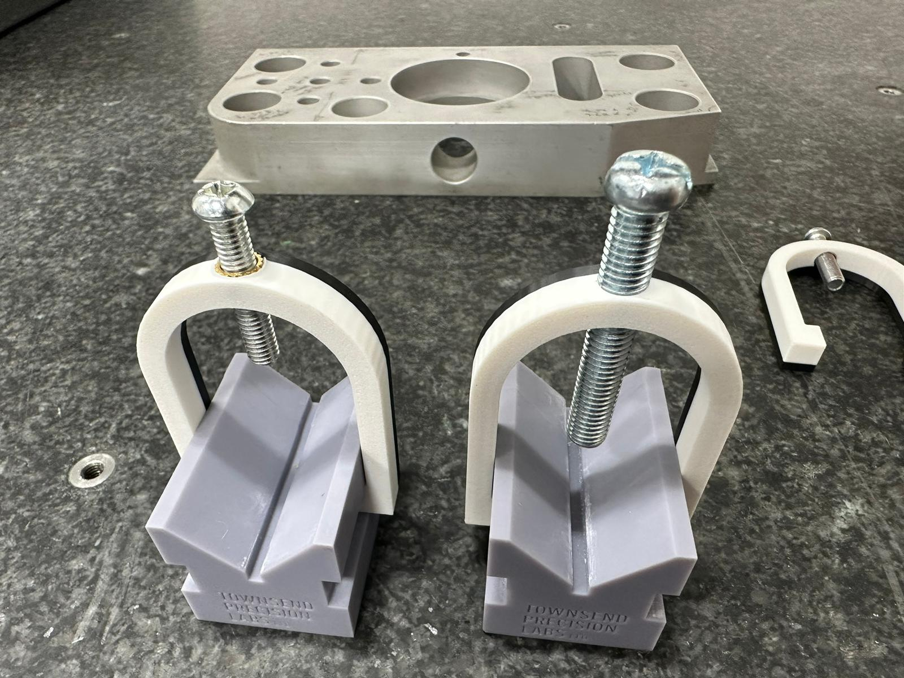
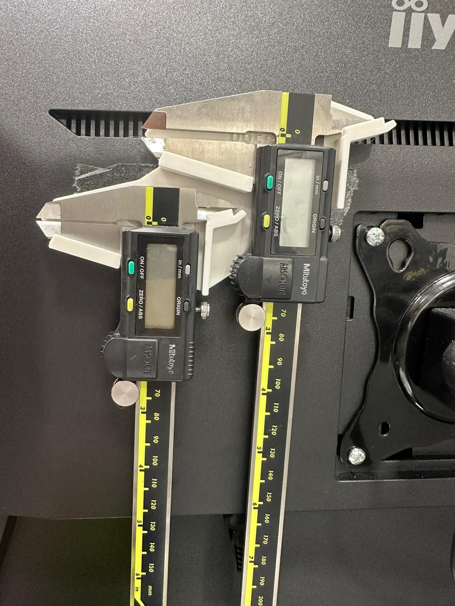
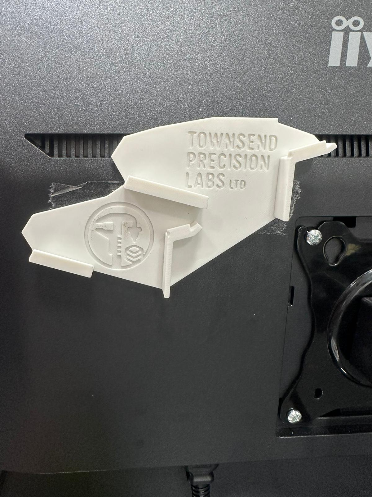

Vee block clamp results and calliper holder
I’ve completed both clamp tests (tapped holes and threaded inserts). I ran out of white ABS, so I had to finish the print in black ABS.

Clamp test: tapped holes
The tapped part worked flawlessly — no issues starting the tap (even though I forgot the chamfer again…).
One thing I could do with is a simple fixture to hold the tap perpendicular to the part. It would make tapping faster and more consistent, and I’m pretty sure this won’t be the last part I ever tap.
So that’s on the list: a tap guide / perpendicular tapping fixture.
Clamp test: heat-set inserts
The heat-set insert test gave me a bit more trouble.
The part wasn’t quite thick enough, so once I hit the point where the plastic is properly melting, I started getting some deformation. I mitigated it as best I could, but the end result is a slightly wonky thread.
As you can see, it’s not a huge issue — the clamp still functions — but I’m chasing consistency.
Same conclusion as the tapping: I want a little fixture/jig so I can insert these square and repeatable, without distorting the part.
Next steps
Overall: good test.
Next I’m going to:
- Print a second batch slightly thicker
- Tap them at M6 to match the heat-set insert size
- Develop fixtures for:
- perpendicular tapping
- perpendicular heat-set insert installation
Once I’ve got better perpendicularity and consistency between methods, I’ll move on to testing clamping forces.
Calliper holder
At my current workplace, the two digital callipers end up living on the desk and constantly getting in the way.
So I drew up a quick sketch (literally tracing them) and made a simple holder to get them out of the way.


Right now it’s stuck to the back of the monitor with double-sided tape.
For the real product I need to decide on a proper mounting method — options I’m considering:
- screw mount
- Velcro
- magnet
Not 100% sure yet — but the actual holder works great. Once I’ve settled on mounting, that’s an actual product ready for sale.